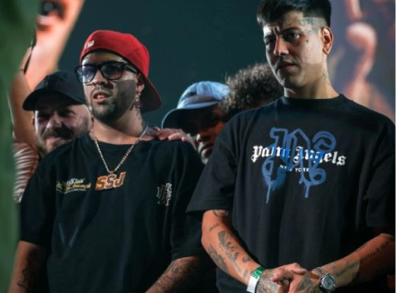
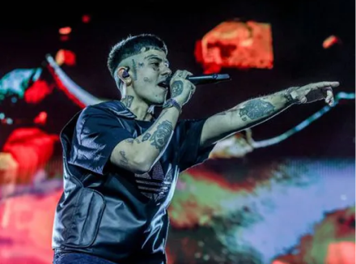
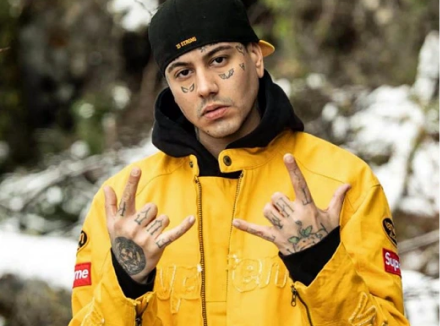

25 JUNIO
DUKI
DUKI Y MKS LANZAN UN NUEVO SINGLE
Los artistas presentan su nuevo single titulado “Tu silencio”, este nuevo lanzamiento marca un hito en el camino compartido por ambos, a través de los distintos momentos de su carrera

LEER MÁS
9 JUNIO
DUKI
CONCIERTO HISTÓRICO DE DUKI EN EL BERNABEU
Duki hizo historia al ser el primer músico argentino en brindar un concierto en el estadio del Real Madrid, y estuvo acompañado por Bizarrap, Emilia, Nicki Nicole, Jhayco, YSY A y Neo Pistea

LEER MÁS
25 SEPTIEMBRE
DUKI
"TROYA" ES LO NUEVO DE DUKI
El trapero argentino que se erige como uno de las figuras más importantes del género urbano en Argentina y Latinoamérica, lanza el último bonus track que le faltaba para completar su...

LEER MÁS
 NO SON KLLE
NO SON KLLE